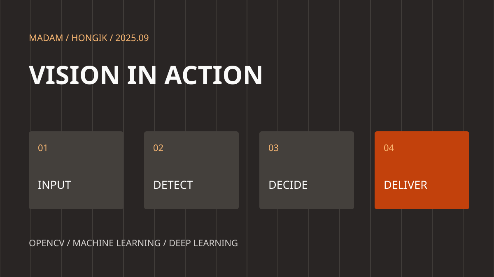

HONGIK / COMPUTER VISION / 2025
영상으로 문제를 풀다
두 팀의 프로젝트
횡단보도 보행자 인식과 문서 보정·OCR. 두 팀의 기술서로 살펴보는 컴퓨터 비전 프로젝트.
카메라가 받아들인 장면은 픽셀의 배열입니다. 그 안에서 사람을 찾고, 움직임을 추적하고, 문자의 의미를 꺼내는 기술을 배웠습니다.

TEAM 01
횡단보도에서 위험 상황을 읽다
보행자 인식 · YOLO · PySide6
1조 기술서는 CCTV나 저장된 영상에서 보행자와 차량을 검출하고, 횡단보도 영역과 신호 상태를 함께 해석하는 프로그램을 설명합니다. 차량 접근과 적색 신호에서의 보행자 횡단을 주요 위험 상황으로 정했습니다.
영상 입력 → 객체 검출 → 위험 판단 → 경고음·안내 표시로 역할을 나눴습니다. OpenCV가 영상 처리를 맡고 YOLO가 객체를 검출하며 PySide6가 사용자 화면을 구성합니다. 교육 프로젝트의 설계 기록이며 실제 도로의 안전 성능을 검증한 사례를 뜻하지 않습니다.
TEAM 02
반사광 너머의 글자를 읽다
無色無光 · 문서 보정 · OCR
2조의 멀티프레임 글레어 제거 문서 보정 스캐너는 문서 사진의 반사광과 노이즈를 줄이고 글자를 추출하는 프로젝트입니다. 기술서에 적힌 수행 기간은 2025년 9월 18~25일입니다.
OpenCV 전처리에 Homomorphic 필터와 감마 파라미터 탐색을 적용했습니다. Tesseract와 PaddleOCR을 비교한 뒤 PaddleOCR을 채택했다고 기록되어 있습니다. FastAPI의 이미지 업로드 API와 React·Vite 화면으로 처리 결과를 연결했습니다. 인식률 개선은 팀 기술서의 설명이며 별도의 정량 수치는 제시되어 있지 않습니다.
인식 모델을 넘어 사용 흐름으로
두 프로젝트는 입력 영상에서 필요한 정보를 꺼낸 뒤 사용자에게 전달하는 방식을 구체화했습니다. 경고음과 안내 화면, 보정된 문서와 인식 텍스트처럼 결과가 쓰이는 순간까지 설계하는 것이 프로젝트의 공통 과제였습니다.
수업 기록과 참고 자료
수업 README의 안내 기간은 9월 2~19일이며 일지는 9월 1~18일을 기록합니다. 2조 기술서의 프로젝트 기간은 9월 18~25일입니다. 서로 다른 기록 범위를 구분해 소개했습니다.